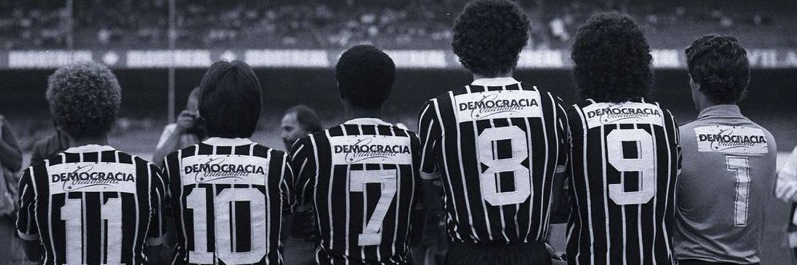
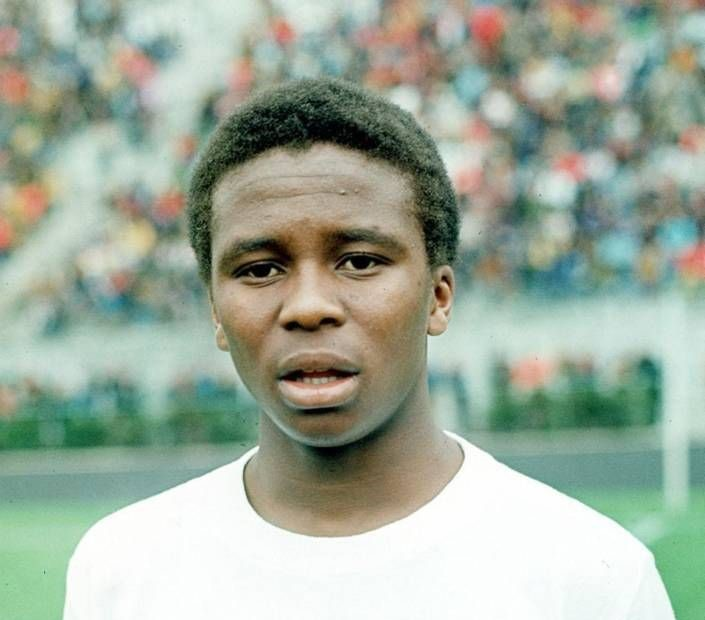
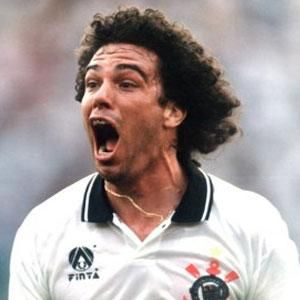
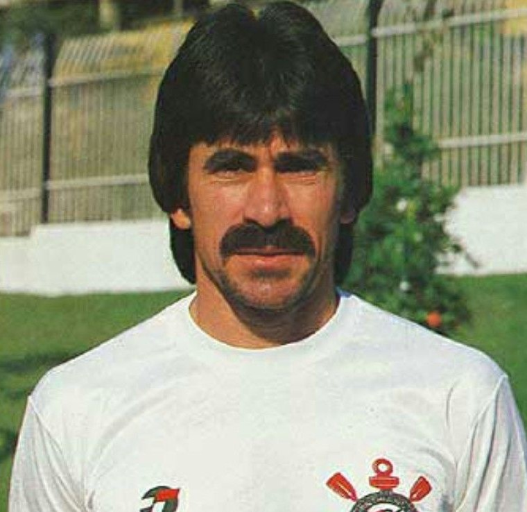
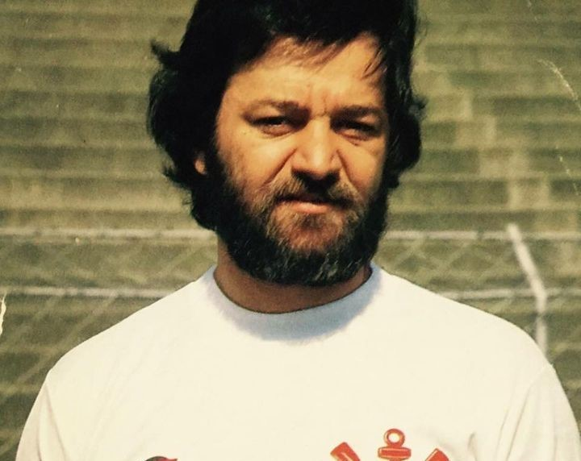
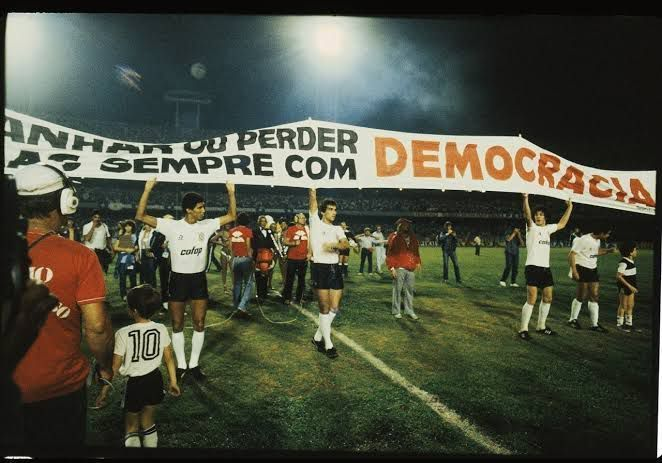

SÓCRATES
Um dos maiores símbolos da Democracia Corinthiana e uma das principais lideranças daquele grupo de jogadores.
UM DOS CAPÍTULOS MAIS MARCANTES DA HISTÓRIA DO CORINTHIANS.
No início da década de 1980, o Corinthians viveu um período marcado por uma forma diferente de participação dos jogadores nas decisões do cotidiano do clube.
Esse movimento ficou conhecido como Democracia Corinthiana e teve entre seus principais protagonistas jogadores como Sócrates, Wladimir, Casagrande e Zenon.
A proposta valorizava a participação coletiva e tornou-se um dos episódios mais conhecidos da história do Corinthians.

PERSONAGENS IMPORTANTES DESSE PERÍODO
Um dos maiores símbolos da Democracia Corinthiana e uma das principais lideranças daquele grupo de jogadores.

Ídolo histórico do Corinthians e um dos jogadores envolvidos diretamente no movimento.

Atacante do Corinthians e uma das figuras de destaque daquela geração.

Meia que fez parte do grupo de jogadores que marcou o período da Democracia Corinthiana.

Dirigente que teve papel importante na implementação de uma gestão mais participativa no Corinthians.
Jogadores e funcionários participavam de discussões relacionadas ao cotidiano do clube.
Algumas decisões eram discutidas coletivamente entre os integrantes do grupo.
O movimento buscava ampliar a participação dos jogadores nas decisões do dia a dia.
A Democracia Corinthiana começa a ganhar forma dentro do Corinthians, com maior participação dos jogadores nas decisões do cotidiano.
A experiência passa a ganhar maior repercussão e se torna uma das marcas daquele Corinthians.
A Democracia Corinthiana alcança grande repercussão e passa a ser lembrada também por sua relação com o contexto brasileiro daquele período.

A Democracia Corinthiana surgiu em um período importante da história brasileira, quando o país vivia os últimos anos da ditadura militar.
O movimento ficou conhecido não apenas pela participação dos jogadores dentro do Corinthians, mas também pela presença de seus integrantes em debates que ultrapassavam o campo de futebol.
A Democracia Corinthiana tornou-se parte importante da identidade histórica do Corinthians e continua sendo lembrada como um dos períodos mais marcantes da trajetória do clube.